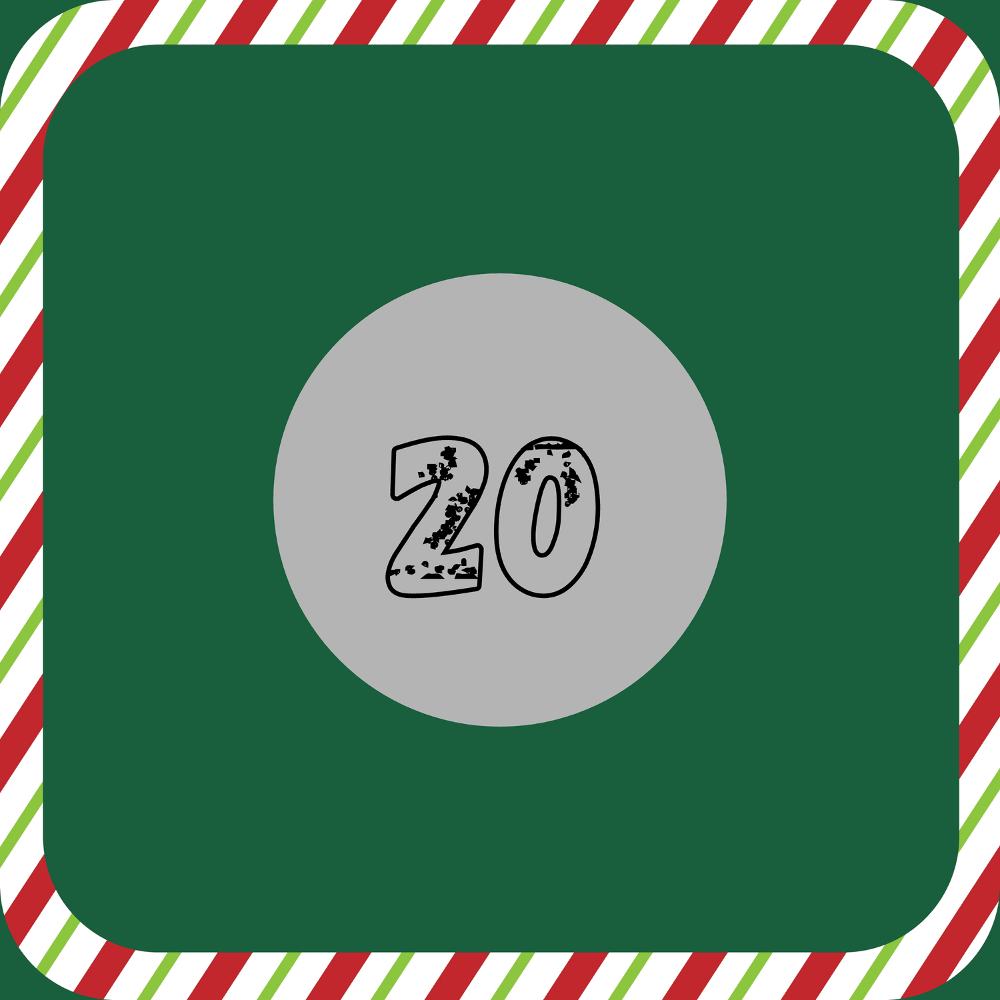

Inför denna lucka har Johanna förlorat en livstid i försöket att hitta en djurframförd version av O helga natt. I brist på en sådan vänder vi oss till Duris släktträd, där vi hittar inspiration till årets Therianversion av O helga natt. Vi njuter av en version som borde locka de flesta däggdjur till sång.